Start Date: 2024-04-16
Total Days: 41
Total Drafts: 202,232
Total Games: 1,172,393
Win Rate: 54.1%
Mean Turns per Game: 9.20
Mean Games per Draft: 5.80Outlaws of Thunder Junction (OTJ) Arena Draft Analysis
EDA
Draft
OTJ
Arena
Draft set analysis for Outlaws of Thunder Junction
1 Introduction
Drafting in Magic: The Gathering (MTG) is a complex and dynamic format that challenges players to adapt quickly, make strategic decisions, and understand the evolving meta of each new set. In this analysis, we explore the Outlaws of Thunder Junction (OTJ) set, which was released in Arena on April 16, 2024. We will investigate the effect of deck color choices on player win rates.
We use data from the 17Lands for the premier draft format on MTG Arena, a best-of-one draft format where players draft in a pool and play until they win 7 games or lose 3.
By examining deck performance aim to uncover the key elements that contribute to success in this draft environment. Through this analysis, we provide valuable insights to help both seasoned and new drafters make more strategic decisions in the Bloomburrow draft format and beyond.
To see other analyses of MTG draft data, check out the Draft Analysis page.
2 Summary Data
Here we summarize key statistics from the data, reflecting the experiences of 17Lands players.
3 Color Decks
We will explore the use and importance of colors in draft decks. We will look at the frequency of color sets in decks, the win rates of color sets, and the win rates of color pairs.
3.1 Color Frequency
We start by examining the frequency of decks drafted for each color combination in Figure 1. The ten two-color decks are the most common, with mono-color and multi-color decks are far less common. This is consistent across all sets analyzed.
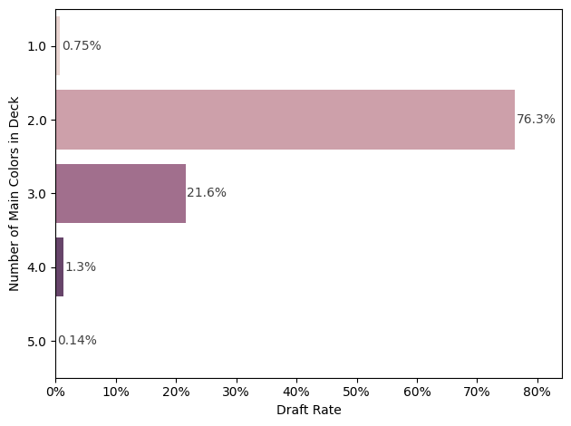
Since two-color decks are the most common, we’ll focus on these pairings. In Figure 2, we see the most frequent drafted decks are White-Green, Black-Green, and Blue-Black. On the other hand, the least drafted are Blue-Red, White-Red, White-Blue.
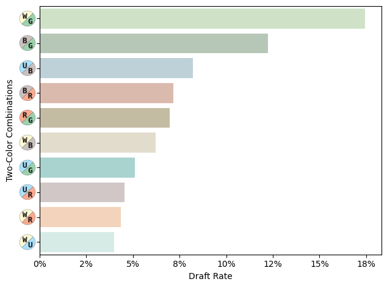
Figure 3 shows the color composition of the decks. Green stands out as the most frequently drafted color, with Black and White also being popular choices. In contrast, Red and Blue are drafted far less frequently.
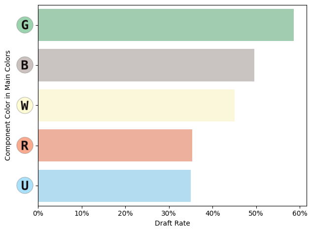
Next, we examine the four decks with the largest absolute changes in use between the start and end of the time period, shown in Figure 4. The White-Green and White-Black increase in use over the weeks, with Black-Red and Blue-Red losing favor.
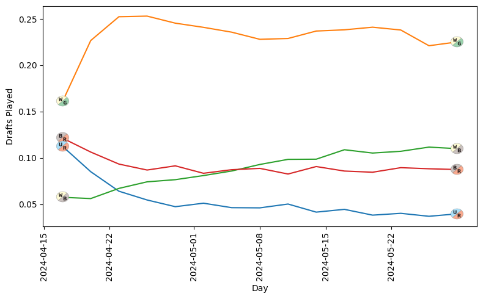
3.2 Color Win Rates
In addition to analyzing the use rates of the colors, we’ll also examine their win rates. First, we calculate the weighted average win rate, which is 54.14%. As highlighted in the summary section, this win rate suggests that the 17Lands player base performs better than the general draft player base.
Figure 5 presents the win rates for each color combination. While some mono-color decks have notably high win rates, their low use rates suggest that these results may be circumstantial due to small sample sizes.
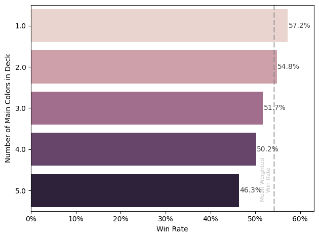
In Figure 6, we focus on the 2-color decks. The White-Green deck dominates with a >57% win rate. The Blue-Red is the least successful, with a win rate of 50.5%.
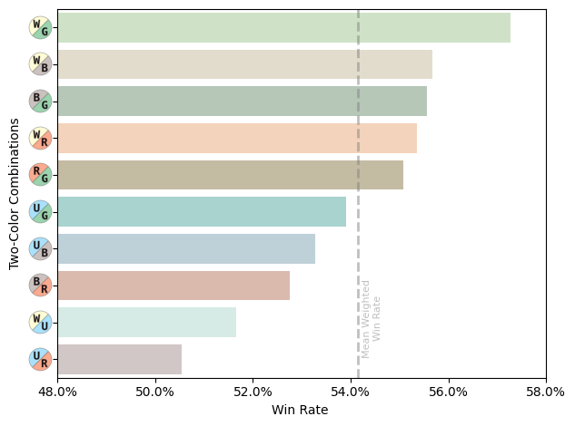
Figure 7 shows the win rates for the five primary colors, based on whether they serve as a main component in a deck. For example, the “B” results reflect the win rates for Black in decks such as WB, BG, Mono-Black, and UBR.
The decks using green perform the best, with ones using blue performing the worst.
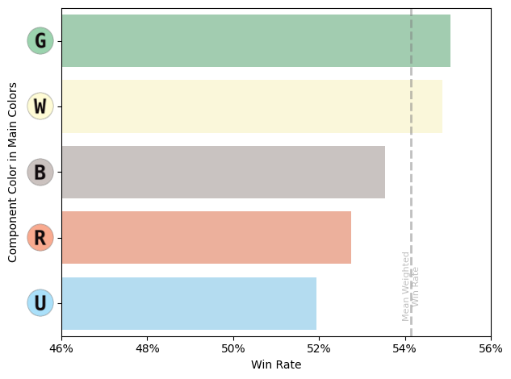
3.3 Win Rate over Time
It’s also insightful to observe how the win rates for two-color decks evolve over time. I selected the four decks with the largest absolute changes in win rate between the start and end of the period. In Figure 8, we see that the most decks stay fairly consistent. The White-Green deck shows a sizable drop in performance during the first few weeks.
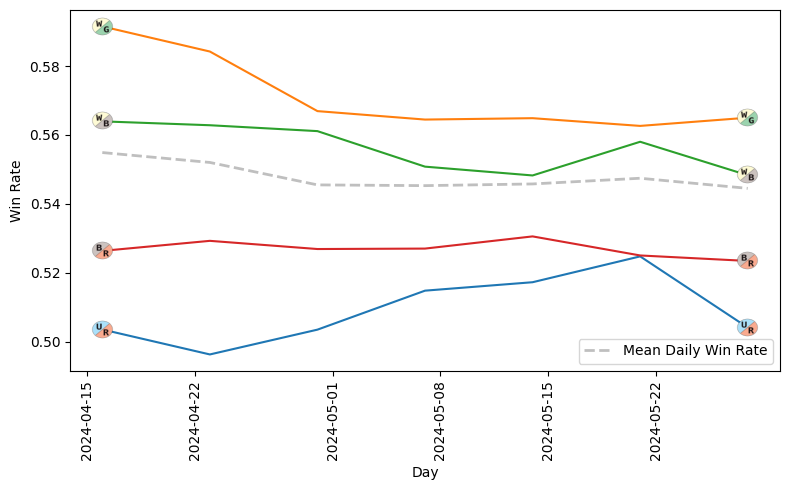
3.4 Color Freq vs Win Rate
Next, let’s compare the use rate to the win rate to see if the player base is well-calibrated in their deck selections based on performance.
In Figure 9, we observe a fairly strong correlation between win rate and draft rate. The White-Green and Blue-Green decks align nicely with this trend.
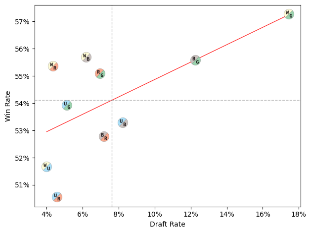
3.5 Wedges vs Shards
Magic: The Gathering color theory includes five wedges and five shards. Wedges are three-color decks built around a primary color and its two allies, while shards consist of a primary color and its two enemies. Conventional wisdom suggests that wedges are generally easier to draft than shards.
However, as shown in Figure 10, the difference in win rate is minimal.
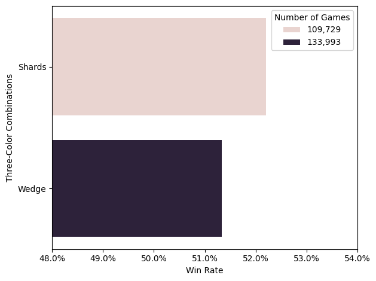
4 Opposing Player Colors
We also have data on the opposing player colors, which helps us understand the draft meta. For each draft color combination, we compare the use rate of 17Lands players with that of their opponents. Each combination is color-coded to indicate whether its win rate is above or below the average win rate of the 17Lands player base. A diagonal grey line is included to show parity between the use rates of 17Lands players and the general player base.
In Figure 11, we focus on the two-color drafts. The data reveals that White-Green and Blue-Green are strongly favored by 17Lands players, and also have a high win rate.
The 17Lands players generally favor any 2-color deck more so than opposing players.
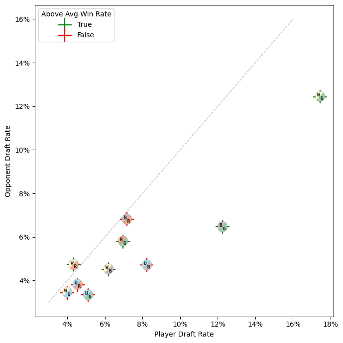
Looking at the non-2-color drafts in Figure 12, we observe that 17Lands players are far less likely to draft any color combination that isn’t a two-color deck.
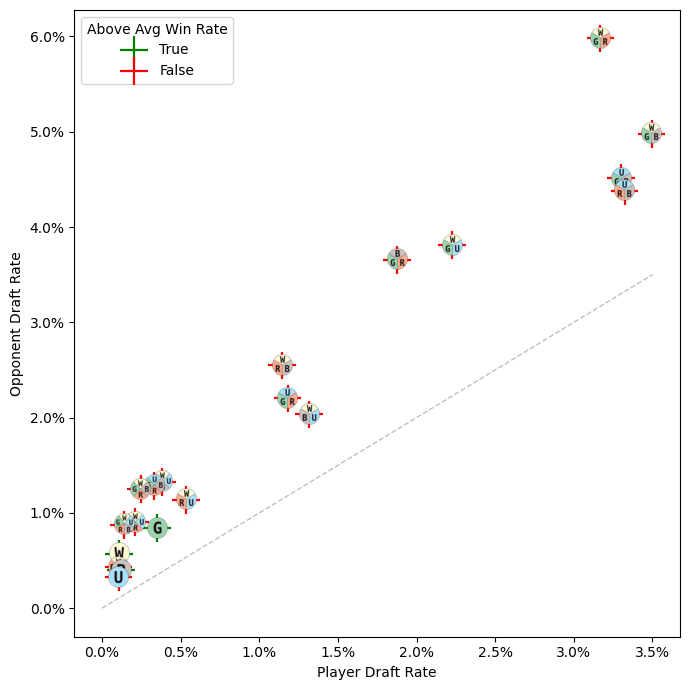
5 Color Face-Offs (2-Color vs 2-Color)
Let’s now compare each pairing of the two-color decks in Figure 13. This comparison provides insights into the strengths and weaknesses of individual decks.
We start by examining the number of games played between each pairing. The rows and columns are sorted by the maximum frequency of player deck pairings, with White-Green vs White-Green being the most common matchup.
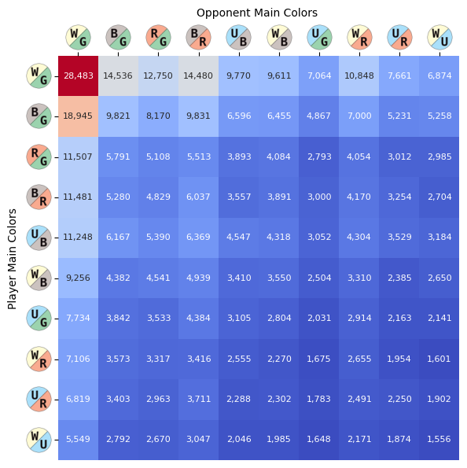
Next, we examine the pair-wise win rates for players in Figure 14.
The most notable observation is that the 17Lands player base performs well in most matchups. The White-Green, Black-Green, Red-Green, and White-Black decks having strong performance across all opponent decks.
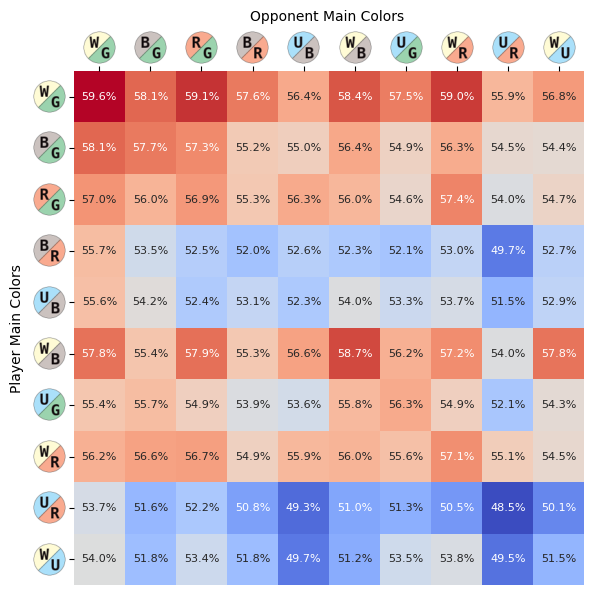
6 Color Splash
Splash colors are 1-3 non-land spell cards of a given color that enhance a deck without significantly diluting its main colors. These splash cards are often very powerful and can provide strategic advantages.
In Figure 15, we can see how frequently splashing occurs across different decks.
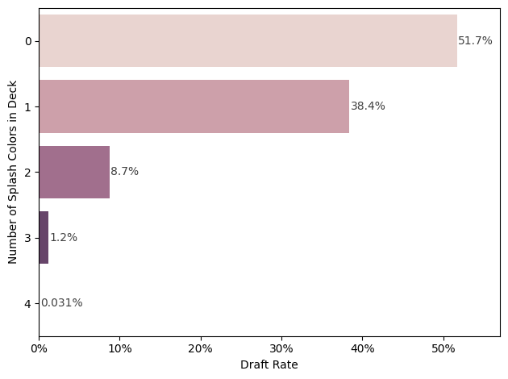
In Figure 16, we observe the frequency of splashing for each color. Red is the most commonly splashed color, while Green is the least common. In all sets analyzed, Green is the least common splash color.
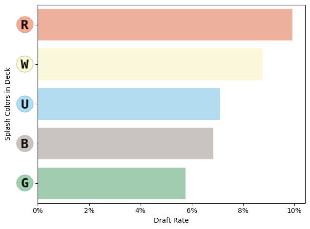
7 Conclusion
This analysis of the Outlaws of Thunder Junction (OTJ) draft data provides valuable insights into the dynamics of deck performance, player strategies, and overall gameplay within the set. Key findings include the strong influence of deck choice on win rates. We observed that players often align closely with expected use rates and win rates, but there are some exceptions. Ultimately, understanding these patterns can help players refine their drafting and gameplay strategies, making more informed decisions to enhance their success in both digital and paper formats.